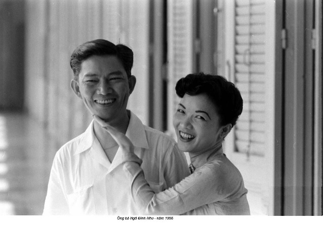
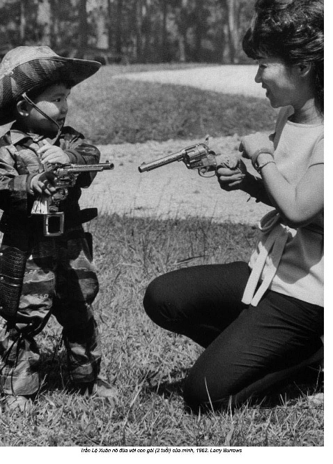

Chương 7

“é Tommy của cô trông rất hạnh phúc và khỏe mạnh”, bà Nhu thầm thì trong điện thoại. Bà đã gọi điện chúc mừng tôi sau khi nhận một bức thư thông báo “Đó là con trai”. Chúng tôi đã báo tin cho các bạn bè thân thiết và gia đình - và vào phút cuối cùng tôi đã gởi một lá thư đến Paris. Trong đó có tấm hình bé Tommy đính trên tấm bưu thiếp dày. Bà đã bình luận ngay lập tức về màu đỏ của tấm thiếp và tuyên bố tương lai của đứa trẻ “rất triển vọng”. Giọng nói của bà với tôi đã thay đổi. Nó nhẹ nhàng hơn, vút cao hơn. Những sự ngắt quãng đột ngột và lúng túng trong những cuộc gọi đầu tiên giữa chúng tôi đã dịu xuống thành một cung cách thường đàm hơn.
Chúng tôi nói về sự chào đời, giờ giấc đi ngủ và cho ăn và, trong sự kinh ngạc của tôi, chuyện nuôi con bằng sữa mẹ. Bà Nhu không chắc là cừ về điểm này. Từ những gì tôi hiểu, hầu hết phụ nữ Việt Nam thuộc một tầng lớp nhất định trong thời đại bà đã sử dụng những bảo mẫu - và tôi có thể hiểu vì sao. Trong một vài tuần đầu tiên chăm chút đứa bé, tôi luôn ăn bận xuềnh xoàng và lôi thôi lếch thếch, một nguyên nhân và hậu quả của việc cho con bú. Tôi có những chiếc yếm cho bé bú, đai địu bé và đủ loại áo choàng. Những chiếc áo dài trong tủ quần áo của bà Nhu may từ lụa và có một hàng nút móc gài, khiến việc cho con bú trở nên vô cùng bất tiện. Chỉ cần một ít nước tiểu hay phần rớt rãi của đứa bé là sẽ hủy hoại nó mãi mãi. Ấy vậy mà, bà khoe, “Tôi cho mỗi đứa bú ít nhất sáu tháng”. Thật khó mà hình dung cảnh Rồng Cái với một bé sơ sinh bên bầu ngực của bà, nói chi đến bốn lần như vậy. Giọng tôi nghe hẳn có vẻ ngạc nhiên vì lẽ bà hơi mỉm cười khi thú nhận rằng đó thật ra không phải là ý của bà mà là của chồng và gia đình ông ấy. Nhưng trong tất cả những lần đó, bà Nhu nói, tôi đều cảm thấy hạnh phúc. Giữa tất cả những hồi tưởng ấy là tiếng thở dài của bà trong ống nghe, “Tôi rất yêu những đứa trẻ”.
Lệ Thủy chào đời vào đầu năm 1946 giữa cuộc náo loạn thời kỳ hậu chiến. Cảnh hỗn độn ấy đã bùng nổ thành cuộc chiến tranh khốc liệt vào thời điểm bà Nhu sinh hai con trai tiếp theo, Ngô Đình Trác năm 1949 và Ngô Đình Quỳnh năm 1952. Bà Nhu đã trở thành mẹ ngay khi thế giới bà biết đã bị lật nhào và xáo trộn dữ dội.
Nhưng ít ra thì bà Nhu và chồng đã được tái hợp. Trong khi vợ, con gái, mẹ, và em gái đang bị lùa ra khỏi Huế bằng những chiếc lưỡi lê, ông Nhu đang hoạt động trong bóng tối, thiết lập một mạng lưới những nhân vật chính trị phi Cộng sản khác. Mặc dù thận trọng, ông cuối cùng đã khơi dậy sự nghi ngờ của Việt Minh ở Hà Nội, và ông Nhu đã ẩn thân ở Phát Diệm, một thị trấn Thiên Chúa giáo thuộc tỉnh Ninh Bình.
Ông Nhu đã tình cờ gặp lại cha mẹ vợ ở Phát Diệm. Ông bà Chương đã tìm kiếm nơi trú thân ở đó - một cuộc trốn chạy kịch tính điển hình khi họ vừa kịp ném mình lên những bậc tam cấp nhà thờ Công giáo với những binh lính Việt Minh chỉ ở sau lưng cách mấy bước chân. Vị linh mục nhà thờ Phát Diệm đã chấp nhận cho cha mẹ bà Nhu nương náu trong nhà thờ của ông, bất chấp việc họ là những Phật tử.
Từ Phát Diệm, một mạng lưới những tín đồ Công giáo đã tạo cho ông Nhu, và cuối cùng là ông Chương, một hành lang an toàn đến Sài Gòn - khi ông Chương ngụy trang thành một nhà sư và vợ ông ăn mặc như một phụ nữ nhà quê.(1)
Bà Nhu đã ở nhà chị gái mình tại Sài Gòn khi nhận được một bức điện khẩn từ linh mục Dòng Chúa Cứu thế kêu mau chóng đến nhà ngài linh mục. Thay vì nhận được tin dữ - bà vẫn sợ rằng ông Nhu có thể đã chết - bà được đưa đến một căn phòng nơi có một vị khách đang đợi bà: chồng bà. Sự sum họp với cha mẹ sẽ đến sau đó; bây giờ, ông bà Nhu phải tìm đường ra khỏi Sài Gòn. Người Pháp đã ngờ vực những hành động của ông Nhu, và sự cộng tác với người Nhật vào thời chiến của ông Chương đã phủ một màn mây đen lên cả gia đình.(2)
Ông bà Nhu đã dọn lên Đà Lạt, một biệt thự đẹp như tranh náu mình giữa ngàn thông và những ngọn núi vùng cao nguyên trung phần Việt Nam. Và mặc kệ chiến tranh, bà Nhu đã gọi những năm tháng đó là “quãng thời gian hạnh phúc nhất” đời bà.
Đà Lạt đã được dựng lên từ hư không đặc biệt cho mục đích hưởng lạc. Người Pháp đã quyết định từ đầu thế kỷ hai mươi là xây một thành phố nghỉ mát trên vùng núi như một nơi trốn tránh cái nóng và sự dơ bẩn của những thành phố. Nó được xây dựng một cách rất cô lập, điều mà các nhà sáng lập tin là sẽ làm cho trải nghiệm ở Đà Lạt càng thêm thích thú. Người Pháp đã tạo ra một địa điểm để giúp họ quên hoàn toàn họ đang ở Đông Dương - một “hòn đảo da trắng” ở vùng nhiệt đới.(3) Họ xây dựng những ngôi nhà như những biệt thự nghỉ trượt tuyết, và ga tàu lửa trông như một sân ga ở Deauville, một thành phố ven biển Normandie. Họ trồng những cây cho các loại thực phẩm mà họ thiếu. Đến hôm nay những ngôi chợ Đà Lạt có đầy đủ các thành phần để nấu món xúp đúng kiểu Pháp: tỏi tây, cần tây, cà rốt, hành, rau xanh, và khoai tây.
Gia đình bà Nhu đã đến với Đà Lạt “mãi mãi”. Họ yêu nó vì cùng những lý do mà người Pháp yêu. Nó nâng họ lên trên sự hỗn tạp bẩn tưởi của loài người trong những thành phố quá đông đúc và nóng bức. Ở đó có những khách sạn đẹp kỳ lạ, những sân gôn, và những nhà hàng Pháp và Trung Hoa. Ở đó cũng có những hộp đêm, nhà hát và nhạc jazz. Anh họ của bà Nhu, hoàng đế Bảo Đại, có một cung điện ở Đà Lạt, giống như của quan toàn quyền Pháp.
Đà Lạt vẫn nổi danh về sự thư nhàn và xa hoa; giờ đây nó là điểm đến trăng mật cho những cặp vợ chồng Việt mới cưới. Đà Lạt gợi tôi nhớ đến Thác Niagara với hơi ít ánh đèn nê-ông và thật nhiều quán karaoke. Những trái tim hồng và hoa hồng đỏ in trên giấy nến được dán khắp nơi - cả trong những câu khẩu hiệu đảng phái in trên băng rôn vàng chóe treo khắp các ngả đường chính. Những ngọn đèn Noël thắp sáng quanh năm lung linh trên những cành cây. Những chiếc thuyền đạp nước hình thiên nga cho thuê dọc bờ hồ. Chúng khuấy tung mặt hồ nhân tạo phẳng lặng giữa trung tâm thành phố, làm cho nước ngầu đục và sóng sánh. Nổi danh với ngàn hoa, cảm giác thành phố này giống như một gian hàng Valentine tại cửa hàng CVS vào giữa tháng Hai. Sự vội vã quy hoạch và quản lý ngành công nghiệp du lịch lãng mạn đầy lợi nhuận này của nhà nước đã giáng đòn nặng nề vào vẻ đẹp tự nhiên của Đà Lạt.
Khi ông bà Nhu đến vào mùa xuân năm 1947, Đà Lạt đã không còn giống như trong kỷ ức thời trẻ của bà Nhu. Những lùm rừng nhiệt đới đã chiếm chỗ những trảng cỏ lớn của thành phố. Cuộc suy thoái toàn thế giới lan đến Việt Nam vào đầu những năm 1930 đã cắt xén đáng kể ngân sách du lịch. Đến thời điểm chiến cuộc nổ ra ở Âu châu năm 1939, Đà Lạt đã bị bỏ mặc không ai ngó ngàng tới. Những sân tennis xác xơ và phủ đầy cỏ dại. Những sòng bạc ngừng hoạt động. Những hộp đêm và rạp xi nê bị đóng cửa, và những lối đi dọc bờ hồ vắng lặng đìu hiu. Trong suốt chiến tranh, người Nhật đã bố ráp và giam cầm bất kỳ ai cố ở lại. Khách sạn Palace không một bóng du khách - cầu thang gác hoành tráng ngày nào đã đổ sập, và không có ai ở đó để sửa sang. Lợn lòi và mèo rừng xâm lấn vào ranh giới thành phố.
Ồng bà Nhu ở trong một ngôi nhà mượn tại số 10 đường Hoa Hồng (rue des Roses). Nó thuộc về một bác sĩ bạn của cha bà Nhu, và mặc dù không phải một biệt thự lớn, cha mẹ bà Nhu đã đến ở, và cả anh trai ông Nhu, Ngô Đình Diệm.(4) Nhà văn Pháp viết về vùng Viễn Đông Lucien Bodard nói đây là một nơi “phô trương lòe loẹt”; bà Nhu chỉ nói rằng “Bạn sẽ không muốn băng qua vườn để vào bếp sau khi trời tối vì bạn sẽ không muốn đâm sầm vào một con cọp”.(5) Nhưng những sự hy sinh là điều duy nhất để mà chờ đợi - một cuộc chiến đang tới gần.
Một cuộc chiến mới sẽ được mệnh danh là Chiến tranh Đông Dương lần thứ nhất, nhưng hồi trước khi người ta biết sẽ có cuộc chiến thứ hai, nó mang những cái tên khác. Với người Việt Nam, đó là Kháng chiến chống Pháp; với người Pháp đó là Guerre d’ Indochine - Chiến tranh Đông Dương; dù là gì đi nữa, nó bắt đầu ngay khi Thế chiến thứ hai chính thức trôi qua. Cuộc chiến ở Âu châu đã để lại một nước Pháp tan hoang - nền kinh tế sụp đổ, cũng như cơ sở hạ tầng - và những nguồn tài nguyên thiên nhiên của Việt Nam trở nên lấp lánh như ánh vàng. Chúng đã từng bị người Pháp chiếm; một lần nữa cớ sao không được? Việc tái thuộc địa hóa Việt Nam sẽ xác nhận lại những ý niệm thực dân xưa cũ về sự ưu việt của Pháp quốc. Đó là một sự nghiệp mà cả quốc gia có thể tập hợp lại - không bao giờ đếm xỉa đến những gì bản thần người Việt mong muốn.
Người Pháp đã lao bổ trực diện vào Việt Minh. Pháp có một quân đội hiện đại và những vũ khí tối tân, cũng như sự tài trợ lớn hơn bao giờ hết của Mỹ. Việt Minh - dựa vào tài khéo léo của các tân binh, những chiến thuật du kích bất ngờ, và quyết tâm hoàn toàn của những người đến từ các làng mạc, ruộng nương, và thành phố - đã cảm thấy quá đủ với sự cai trị ngoại bang. Chiến cuộc diễn ra ác liệt trong tám năm. Các ước tính có khác nhau, nhưng những sử gia ước lượng số thương vong bên phía Việt Minh vào khoảng từ 250.000 đến 500.000 người. Phía Pháp thiệt hại hơn 75.000 người - hơn số thương vong của Hoa Kỳ trong cuộc chiến tiếp theo trên đất Việt Nam.
Trận đánh quyết định của cuộc chiến tranh diễn ra vào ngày 7 tháng Năm, 1954, trong một thung lũng xa về phía tây bắc của Việt Nam, gọi là Điện Biên Phủ. Quân Pháp đã bị áp đảo. Việt Minh đã bao vây được họ bằng trọng pháo và quân số. Người Pháp đã mất hết ý chí chiến đấu. Sau một trăm năm, họ cuối cùng đã khăn gói về nhà. Đó là bài học đầu tiên cho thấy một nỗ lực áp đặt sự cai trị ngoại bang lâu dài lên Việt Nam là vô ích thế nào. Giá mà người Mỹ đã biết chú ý hơn.
Tuyến đầu khốc liệt của cuộc chiến ở rất xa nơi ẩn cư trên núi của gia đình bà Nhu. Bà Nhu đã gọi nó là une guerre bizardouille, một cuộc chiến nhỏ kỳ lạ. Bà miêu tả cuộc sống của bà ở Đà Lạt là an toàn và đơn giản và hoàn toàn vắng bóng chính trị. Bà Nhu chăm nom một gia đình ngày càng mở rộng, sinh những em bé, quán xuyến những việc vặt vãnh trong nhà, và nấu ăn. Cũng người phụ nữ lớn lên với hai mươi người hầu đã đạp xe đạp đi chợ hàng ngày và đưa con gái đến trường. Ông Nhu chồng bà đang say sưa với thú nuôi phong lan.(6)
Nhưng không có gì ở Đà Lạt là hoàn toàn giống với cái dường như là nó. Ngay chính tiền đề về nơi này như một hòn đảo cho sự nghỉ ngơi và yên tĩnh lành mạnh của người da trắng là một điều đại dối trá. Vì một điều, số phận của nó không bao giờ cách ly khỏi người Việt được. Nơi này được xây trên mồ hôi và xương máu của lao động khổ sai. Bất chấp nguồn vốn nhân lực vô tận và đặt nặng vào sự xa hoa, các nhà sáng lập thực dân đã cạn kiệt tiền bạc. Trớ trêu thay, khu nghỉ mát được xây dựng như một nơi trốn lánh có lợi cho sức khỏe của mọi người lại là một cái ổ phát sinh muỗi sốt rét do những cái hồ nhân tạo. Đà Lạt cũng không phải là nơi ẩn náu êm đềm khỏi chiến tranh. Nó đã trở thành đại bản doanh trên thực tế của những tham vọng chính trị và quân sự của Pháp ở Đông Dương. Hơn nữa, ông Nhu không hoàn toàn say sưa với hoa lan như ông tỏ ra. Ồng đang ấp ủ một cái gì đó nguy hiểm hơn nhiều.
Trong suốt những năm ở Đà Lạt, từ 1947 đến 1954, Ngô Đình Nhu đã gieo trồng những hạt mầm của một đảng phái chính trị, đảng mà ông gọi là Cần lao (Đảng Cần lao Nhân vị - Personalist Labor Party). Nó tuyển mộ những thành viên vào một mạng lưới những chi bộ trong đó mỗi người không biết nhiều hơn một vài đồng chí trong hội. Tất cả những vận động ngấm ngầm đó đã sinh hoa kết quả, tạo ra một bộ máy chính trị với mười ngàn thành viên. Nó sẽ ủng hộ và củng cố chiếc ghế Tổng thống của Ngô Đình Diệm trong chín năm, nhưng tổ chức này sẽ không bao giờ rũ sạch những bí mật của những năm tháng sáng lập nó. Nó đã chuốc lấy cho chính nó và người sáng lập, ông Nhu, một tiếng tăm bất chính.
Nguyên tắc cơ bản nhất của “Chủ nghĩa Nhân vị” nói rằng nhân cách là thuốc giải bách độc cho một cá thể. Đó là một khái niệm hoàn toàn gây bối rối. Ồng Nhu đã làm quen với triết thuyết Thiên Chúa giáo mơ hồ tăm tối hồi còn là một sinh viên năm 1930 ở Pháp. Những nỗ lực của ông để lý giải làm thế nào một triết thuyết Công giáo Pháp có thể áp dụng để xây dựng một Việt Nam độc lập luôn luôn dài dòng và khó hiểu. Niềm tin của ông, tuy nhiên, rất nhiệt thành. Ông Nhu đang xây dựng một phương án thay thế thật sự cho Pháp lẫn Việt Minh. Ông đang gây dựng một mạng lưới những người ủng hộ cho anh trai mình là ông Diệm.
“Tôi cô đơn trong hầu hết thời gian”, bà Nhu viết về cuộc hôn nhân của bà trong suốt giai đoạn đó. Trong khi ông Nhu đang xây dựng nền tảng chính trị của mình, vợ ông không hề biết ông ở đâu. “Chồng tôi đơn giản là biến mất mà không nói một lời”. Bà Nhu có thể không biết chính xác chồng bà đang ở đâu, nhưng bà có một ý niệm đại thể về những gì ông đang làm. Địa điểm trăng mật không thể che đậy thực tế rằng cuộc hôn nhân của họ đã trở thành một cái gì đầy toan tính thực dụng và không có mấy thời gian còn lại dành cho tình yêu.
Bà Nhu không hoàn toàn cô độc khi chồng bà vắng bóng vì những sứ mạng bí mật của mình. Bà có người anh họ ở Đà Lạt, Hoàng đế Bảo Đại, một người bầu bạn dễ chịu. Về mặt ngữ nghĩa ông là em họ của mẹ bà và không còn là hoàng đế nữa. Dù sao đi nữa Bảo Đại chưa bao giờ thật sự cai trị. Dưới chế độ thực dân Pháp, quyền vị của ông hầu như luôn luôn chỉ là một biểu tượng. Bảo Đại đã lên ngôi năm 1925, khi ông mười hai tuổi. Từ trường học ở Pháp ông đã vội vã trở về nhà để dự đám tang cha, vua Khải Định, để rồi sau đó quay về Pháp. Chiếc ngai vàng đã để trống trong bảy năm tiếp theo, trong suốt thời gian đó quan khâm sứ Pháp nắm quyền hành hoàn toàn. Đến thời điểm Bảo Đại trở lại Việt Nam năm 1932, ông đã được sửa soạn thành một thanh niên Pháp hoàn hảo, hoàn toàn vui lòng làm những gì mà chính quyền thực dân sai bảo.
Bảo Đại đã sống cuộc đời của một kẻ vô tư lự được nuông chiều. Ông đã kết hôn, nhưng điều đó không ngăn cản ông theo đuổi cuộc sống ăn chơi. Săn bắn và đeo đuổi những phụ nữ trẻ là hai niềm đam mê của ông. Những hành động của ông trong Thế chiến thứ hai và hậu quả của chúng đã hủy hoại mọi danh tiếng mà Bảo Đại có thể đã bám víu vào như một lãnh tụ xuyên suốt những năm dưới chế độ thực dân. Trước tiên ông đã đầu hàng người Nhật; sau đó ông trao vương miện cho những người Cộng sản trước khi lập tức quay lại cộng tác với người Pháp trong sứ mạng thiết lập lại quyền kiểm soát Đông Dương của họ vào cuối những năm 1940. Bảo Đại lẽ ra đã trị vì ở Sài Gòn, nhưng ông đã không che giấu sự ưa thích cuộc sống ở Đà Lạt hơn. Ông đủ thực tế để biết rằng dù sao đi nữa ông chẳng thể làm nên trò trống gì. Bảo Đại đã hoàn toàn ý thức và cam chịu định mệnh thảm bại của ông. Khi nghe một phụ nữ từng là bạn ông bị miệt thị vì đi làm điếm, nhà vua đã lên tiếng bênh vực. “Cô ấy chỉ làm công việc của mình”, Bảo Đại nói: “Ta mới là kẻ điếm nhục thật sự”.(7)
Bảo Đại có lẽ cũng bối rối như bà Nhu bởi cái "guerre bizardouille", cuộc xung đột kỳ lạ mà họ không dự phần vào. Hai anh em họ, xa lạ với cả phần còn lại của đất nước trong thời chiến, đã chỉ vừa vặn hình dung được mức độ đảo điên của cuộc thế. Ở Đà Lạt, hai anh em hoàng gia được ở trong một môi trường Âu hóa quen thuộc. Bà Nhu đã tháp tùng người anh họ trong những chuyến đi câu cá và đánh cặp với ông trong các ván bài bridge. Khi chồng không có ở nhà, họ đi dã ngoại và bơi thác. Từ đằng sau những bức tường màu hoàng thổ của cung điện được trang trí nghệ thuật theo phong cách chiết trung (Art Deco), bà Nhu và anh họ bà có thể nhìn xuống thung lũng đang khi vẫn ngồi thu lu trong thế giới của mình.
Bà nói chồng bà biết tất cả về “những buổi dạ hội ban đêm và du ngoạn ban ngày” đó. Ông có lẽ còn khuyến khích chúng nữa. Mặc dù tai tiếng, ngôi vị quốc vương của Bảo Đại vẫn có một ý nghĩa chính trị nào đó. Nếu ông Nhu muốn xây dựng một phong trào chống Pháp và chống Cộng, ông cần mọi sự giúp đỡ ông có thể có được. Một cái gật đầu của nhà vua sẽ mang lại một tính cách hợp pháp chí ít ở vẻ ngoài.
Nếu tình bạn giữa vợ ông và anh họ hoàng đế của bà là điều thuận tiện, nó cũng tỏ ra chỉ là nhất thời mà thôi. Bảo Đại là một trong những nạn nhân chính trị đầu tiên của chế độ họ Ngô. Ông đã trải qua phần đời còn lại trong một lâu đài xiêu vẹo ở miền Nam nước Pháp gần Cannes. Trong hồi ký của mình, bà Nhu đã nhắc đến ông anh họ của mình một cách cay đắng. Không còn lại chút hơi ấm nào của tình thân gia đình: Bảo Đại, “con bù nhìn của nước Pháp đó”.
Cung điện của cựu hoàng đế giờ đây là một địa danh du lịch quan trọng thu hút nhiều khách đến Đà Lạt. Nhà nước đã bảo tồn nó, không vì bất kỳ nỗi hoài nhớ về Bảo Đại mà đúng ra như một chiếc tủ kính trưng bày những sự xa hoa phóng túng của một kẻ ăn chơi. Nó đã được xây cho vị hoàng đế Việt Nam vào năm 1933 theo cùng một phong cách như ngôi nhà của quan toàn quyền Pháp - thậm chí sử dụng cùng loại đá granite. Cả hai tòa nhà đều có những góc cạnh hình học, những sân thượng trên mái, và những ô cửa sổ tròn lồi ra ngoài. Có lẽ hai ngôi nhà được xây dựng hệt như nhau với dụng ý thể hiện một sự bình đẳng nào đó, nhưng điều mà chúng thật sự chứng tỏ là sự xa lạ của vị hoàng đế như một người Pháp chính cống.(8)
Ngay cả khi bà Nhu đã trở thành Đệ nhất Phu nhân, bà và gia đình vẫn tiếp tục sử dụng nơi ẩn dật trên Đà Lạt như một chỗ sum họp đặc biệt. Đó là nơi bọn trẻ đến trường nội trú, và cả nhà quây quần trong những ngày nghỉ lễ và xa cách cuộc sống ở cung điện. Lúc bấy giờ, vợ chồng ông Nhu sử dụng nhà của toàn quyền Pháp làm nơi nghỉ cuối tuần.
Năm 1962, bà Nhu mời nhiếp ảnh gia Larry Burrows của tạp chí Time-Life du ngoạn một chuyến cuối tuần ở Đà Lạt. Bà muốn anh xem và chụp ảnh về một nơi rất quan trọng với gia đình bà là như thế nào. Bà đã một mực muốn gia đình thể hiện trước mặt vị khách họ là những người bình dân rất mực. Bà đã trút bỏ bộ y phục thường mặc trong cung điện vào dịp cuối tuần, áo dài lụa may rất vừa vặn và tóc vấn cao đài các. Bà diện một chiếc áo len dài tay và quần lửng thoải mái với mái tóc nửa đuôi ngựa đung đưa. Phong cách khiến một Đệ nhất Phu nhân ba mươi tám tuổi trông rất giống thời trẻ trung, khi lần đầu bà đến sống ở Đà Lạt năm hai mươi ba tuổi. Bà Nhu đan tay vào khuỷu tay chồng và dựa sát người ông. Nhìn bọn trẻ con chơi đùa trên bãi cỏ, người ta có thể ngỡ họ đang ở trong một vùng ngoại ô New Jersey nào đó - cho đến khi bà Nhu quỳ xuống và chỉ dạy cô con gái hai tuổi của mình cách nhắm khẩu súng lục và bắn vào mục tiêu.


Ông bà Nhu thường nói rằng khi nghỉ hưu, họ sẽ dọn đến Đà Lạt ở trọn thời gian.(9) Nhưng bà Nhu không có ý định ở mãi trong nhà của quan toàn quyền Pháp. Bà đã cho xây dựng một cụm nhà tại số 2 đường Yết Kiêu, nhìn xuống một thung lũng tuyệt đẹp. Bà xây một ngôi nhà cho mình, một cho cha bà, và một cho khách khứa. Những ngôi nhà sẽ quây xung quanh một khoảnh sân trong với một bể bơi nước nóng, một khu vườn kiểu Nhật, và một hồ sen. Khi hồ đầy, hình ảnh tấm bản đổ đất nước sẽ hiện ra. Biệt thự của bà được đặt tên là Lâm Ngọc, Porest Jewel, và được canh gác đàng hoàng. Một tháp canh khổng lổ màu xám dành cho lực lượng bảo vệ tư gia đứng sừng sững ở cổng vào.
Ngay cả trong lúc ngôi nhà đang xây dựng, người ta nói rằng nếu một con chim bay lạc vào vườn, nó sẽ bị bắn hạ ngay lập tức. Ngôi nhà có năm lò sưởi và được trang trí với những bộ da và đầu thú hoang mà chồng bà săn được. Nó có một phòng bếp bằng thép sáng loáng với những tiện nghi hiện đại và thậm chí là một lò nướng hồng ngoại. Tất cả các phòng chính đều được trang bị cửa sập bí mật, nó sẽ dẫn đến những đường hầm thoát thân chạy ngầm dưới bể bơi và dẫn vào một ngôi nhà an toàn kế bên. Một chiếc thang bí mật dưới giường sẽ đưa bà Nhu xuống một phòng ngầm dưới đất và một vòm khổng lổ được gia cố thép đủ chắc chắn để chống chịu hỏa lực.(10)
Bà Nhu không nghĩ về “ngôi biệt thự nhỏ” mà bà đang xây ở Đà Lạt như là sự tiêu hoang, nhưng những ngôi nhà Việt Nam truyền thống ở vùng nông thôn vẫn còn dùng một nhà xí dựng trên những chiếc cọc, lỗ xí đặt bên trên một cái hồ lúc nhúc những con cá chép háu đói. Số tiền bà Nhu bỏ ra để xây cho mình một phòng tắm tráng sứ và sạch bong nhiều hơn con số mà phần lớn người ta kiếm được cả đời.
Ngôi nhà mất năm năm để hoàn thành. Bà bắt dựng đi dựng lại cửa trước tám lần. Cửa sổ góc được làm đến lần thứ mười trước khi bà thấy hài lòng. Một trong năm mươi người làm vườn của bà, Phạm Văn Mỹ, kể rằng bà Nhu là “một phu nhân rất khó phục vụ”. Ông nói rằng bà hay quát tháo khi ra lệnh và đe dọa người làm nhưng rất sợ sâu bọ. Người phụ nữ ông mô tả có những sở thích rất xa hoa và thất thường. Ngôi nhà thật là xứng đáng với tiếng tăm của người phụ nữ đã cho xây nó, nhưng bà Nhu nói với tôi rằng bà không bao giờ đặt chân vào nơi đó khi nó được xây xong. Đến thời điểm mà ngôi nhà mơ ước của bà Nhu cuối cùng đã hoàn tất, sự thích thú bà dành cho nó cũng không còn.
“Chúng ta nên gặp nhau”, bà Nhu nói trên điện thoại không lâu sau khi bé Tommy chào đời. Đó là lần đầu tiên bà bày tỏ ý muốn gặp tôi trực tiếp. Ắt hẳn bà đã lập luận rằng tôi không thể âm mưu làm hại bà nếu tôi mang đứa bé bên mình, vì lẽ bà một mực đòi tôi phải mang Tommy theo.
“Paris có được không?”
“Tất nhiên, thưa bà. Tôi rất lấy làm vinh dự”.
Tôi thật sự như vậy. Tôi đang lên kế hoạch một chuyến đi vào tháng Chín để giới thiệu đứa bé với những họ hàng ở Pháp của tôi. Một cuộc dừng chân ở Paris là điều thuận tiện. Tôi không kể với bà Nhu rằng tôi cũng đang định viếng thăm văn khố thuộc địa Pháp ở miền Nam nước Pháp để coi tôi có thể tìm thấy những cứ liệu lịch sử nào khác chăng. Đến thời điểm này, tôi biết bà Nhu tin chắc rằng lời kể của bà là thỏa đáng và không gây nghi ngờ - ngay cả khi nó có những sơ hở rõ ràng đi nữa.
Bà lên kế hoạch về thời gian và địa điểm. Cuộc gặp gỡ của chúng tôi diễn ra ở Église Saint-Leon, một nhà thờ Công giáo không xa căn hộ của bà ở phố mười lăm. Chúng tôi sẽ gặp nhau ở gian giữa của giáo đường, trước bức tượng thánh Joseph vào 10 giờ sáng. “Sau đó chúng ta có thể đi đến công viên bên kia đường”, bà nói: “Để nói chuyện. Nơi đó sẽ rất kín đáo”.
Khi tôi bước vào giáo đường, những cánh cửa giống như mái vòm đóng lại sau lưng tôi, chặn lại những tia nắng mùa thu rực rỡ. Tôi nghĩ, một cách muộn màng, rằng tôi nên lo lắng mới phải. Tôi tự nhắc mình rằng tôi vừa giới thiệu Tommy cho một lão phu nhân bé nhỏ. Chuyện gì có thể xảy ra? Hẳn rồi, bà từng là Rồng Cái. Bà từng chỉ huy một lực lượng dân quân với những phụ nữ được vũ trang và có một đội quân hầu cận của chồng sẵn sàng chờ lệnh, nhưng bà cũng từng bốn lần làm mẹ. Tôi buộc mình tập trung vào khía cạnh đó, nhưng tôi rất bối rối. Tôi tự nhủ mình chỉ nên lo nghĩ đến việc tạo một ấn tượng tốt đẹp.
Tôi mặc chiếc áo cánh sẫm màu cùng chiếc váy đỏ với thắt lưng - một tông màu may mắn. Tôi buộc tóc thành búi nhỏ và mang hoa tai là những viên ngọc trai nhỏ nhắn. Tôi muốn thể hiện cho bà Nhu thấy tôi chuyên nghiệp mà không quá trịnh trọng. Tôi tự nhắc mình rằng tôi đã thấy vui khi bà nhất quyết muốn tôi mang Tommy theo. Nó đang ngủ một cách dễ thương, rúc vào trong chiếc ghế đẩy có những chấm tròn cùng với chú gấu nhồi bông và chiếc mền. Nó đóng vai trò của mình một cách đáng hài lòng. Phần việc của tôi là gây một ấn tượng thích hợp: lễ độ, thông minh, và có năng lực. Tôi khỏi phải kiểm soát bất kỳ điều gì khác.
Tôi tự hỏi, Rồng Cái trông ra sao ở tuổi tám mươi? Tôi đã dành rất nhiều thời gian săm soi những bức hình của bà khi còn trẻ, nhưng cái giọng mà tôi đã làm quen qua điện thoại đã gợi lên một hình ảnh khác. Trong đầu tôi, tôi hình dung bà với cùng một kiểu tóc, vén cao quá đầu như xưa, ngoại trừ vẻ héo hắt do tuổi tác. Gò má của bà, tôi nghĩ, hẳn là bầu bĩnh nhưng thoa đầy phấn như một tấm giấy gạo. Bà vẫn còn dùng son môi đỏ chứ? Tôi bỗng nhiên hình dung bà không thể nào khác ngoài hình ảnh một lão bà lòm khòm và u buồn vẫn không chịu thôi dùng son môi đỏ choét - vệt son hơi bị lem ra ngoài những đường nét nhăn nheo của đôi môi bà.
Tôi đang buông thả trí tưởng tượng của mình. Tôi đã đến sớm, và bây giờ thì bà đã trễ. Tôi đã ở quá lâu trong giáo đường tối lờ mờ, và những viễn tượng ùa vào tâm trí tôi. Phải chăng bà đang quan sát tôi từ nãy đến giờ? Từ một chỗ ngồi trong bóng tối, chờ cho đến thời khắc thích hợp để tiếp cận? Tôi rảo một vòng quanh nhà thờ, bánh xe đẩy kêu lách cách trên sàn đá lát, nhưng tất cả hàng ghế đều trống trơn.
Sau một giờ, tôi nghe cánh cửa cọt kẹt mở ra. Bụng tôi nhộn nhạo, nhưng đó không phải là bà Nhu. Tôi quá căng thẳng đến độ nỗi thất vọng dâng lên trong tôi lại giống như một làn sóng của sự nhẹ nhõm. Tommy đã thức dậy, những tiếng rinh rích vui vẻ của nó cuối cùng đã vỡ thành những tiếng gào khóc vang trên nền đá và giữa những thanh rầm. Tôi nhấc chiếc xe đẩy lên gian bên, qua khỏi những cánh cửa đôi nặng nề, và băng qua công viên kín đáo để cho đứa bé bú. Khi tôi trở lại căn hộ của dì tôi ở Paris, tôi thấy một tin nhắn trên máy trả lời từ bà Nhu. Bà đã phá lệ bằng cách để lại lời nhắn nói rằng bà lỡ hẹn vì cảm thấy không khỏe. Chân bà đau, bà thở dài như để tỏ ý rằng chúng tôi nên trì hoãn cuộc gặp mặt.
Trong lần nói chuyện tiếp theo, bà đã thật sự không nói lời xin lỗi, không dông dài nhiều lời. Nhưng giọng bà nghe khá hối lỗi, và tất nhiên tôi tha thứ cho bà. Lần tới chúng tôi sẽ gặp nhau trong căn hộ của bà, bà nói. Tôi tin bà. Tôi đã chờ đợi một tiếng đồng hồ, lần này trong hành lang, nhưng bà đã không cho tôi vào thang máy. Tôi lại tha thứ cho bà một lần nữa. Bà đã kể cho tôi một câu chuyện đáng buồn: bà không chắc bà có thể tin tưởng bất kỳ ai một lần nào nữa. Tôi sẽ phải kiên nhẫn chứng tỏ bản thân. Rồng Cái vẫn ở ngoài tầm tay với của tôi như một sự trêu ngươi.
CHÚ THÍCH:
1. Để có những chi tiết về cuộc đào thoát của nhà Chương khỏi Việt Minh và ẩn náu tại Phát Diệm với ông Nhu, xem CAOM, Hồ sơ Trần Văn Chương, HRT Non-Cotes, Bulletin de Renseignements, 29 tháng 5, 1947; bản tin ngày 10 tháng 7, 1947, mô tả nơi ăn chốn ở của gia đình Chương kể từ năm 1945. Về những sự quyên tặng vô ích cho Việt Minh, xem Bulletin de Renseignements, 3 tháng 3, 1946.
2. Madame Nhu, Caillou Blanc, 90.
3. Eric T. Jennings khảo sát những ý niệm Pháp quốc về một “hòn đảo da trắng” và về Đà Lạt như một “thành phố kiểu mẫu” trong “From Indochine to Indochic: The Lang Bian/Dalat Palace Hotel and French Colonial Leisure, Power and Culture”, Modern Asian Studies 37, № 1 (2003): 159-194, và Gwendolyn Wright, The Politics of Design ln French Colonial Urbanỉsm (Chicago: University of Chicago Press, 1991), 230.
4. Về địa chỉ, 10 rue des Roses, và việc Diệm lưu trú ở đó, xem CAOM, Haut Commissariat, carton 731, Ngo Dinh Diem.
5. Những mô tả về ngôi biệt thự trích từ hồi ký chưa xuất bản của bà Nhu, Caillou Blatic, và Background to Betrayal: The Tragedy of Vietnam - Bối cảnh của sự phản bội: Bi kịch của Việt Nam của Hilaire du Berrier (Boston: Western Islands, 1965).
6. Gene Gregory, chủ báo Times of Vietnam, tờ báo thân Diệm ở Sài Gòn và là chiếc loa của Nhu, kể điều này với Ed Miller trong cuộc trò chuyện; xem Edward Miller”, Vision, Power, and Agency: The Ascent of Ngo Dinh Diem - Viễn Kiến, Quyền Lực, và Tác Dụng: Sự Đi Lên của Ngô Đình Diệm”, Journal of Southeast Asian Studies 35, № 3 (Tháng 10, 2004): 433-458.
7. A. J. Langguth, Our Vỉetnam: The War - Việt Nam Của Chúng Ta: Cuộc Chiến, 1954-1975 (New York: Simon and Schuster, 2000).
8. Arnauld Le Brusq và Leonard de Selva, Vietnam: A travers Varchitecture coloniale (Paris: Patrimoines et Medias/Éditions de 1’Amateur, 1999).
9. Higgins, Our Vietnam Nightmare - Cơn Ác Mộng Việt Nam Của Chúng Ta, 70.
10. Howard Sochurek, Slow Train Through Viet Nams War - Chuyến Tàu Chậm Đi Qua Cuộc Chiến Việt Nam, National Geographic 126, № 3 (1964): 443.